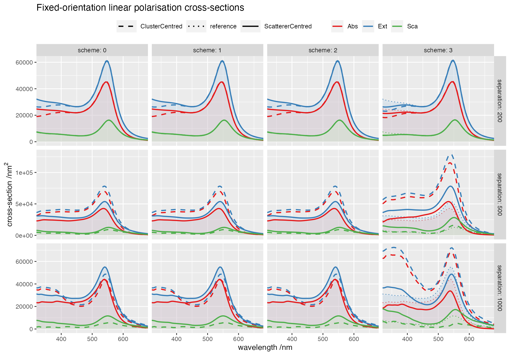

vignettes/104_large_separation/104_large_separation.Rmd
104_large_separation.RmdThis example compares the calculation of cross-sections based on a common origin (Scheme 3) vs Stout’s particle-centred scheme (2). The structure consists of a small chain of 4 gold spheres in water, with a variable (large) separation.
This simulation uses the following input file
ModeAndScheme 2 {scheme}
MultipoleCutoff 8
Wavelength 300 700 100
Medium 1.7689 # epsilon of water
Incidence 0.0 0.0 0.0
# only dipoles, similar outcome
# MultipoleSelections 1
# EE1:1_EM2:1_ME2:1_MM2:1 blocks
OutputFormat HDF5 xsec_{separation}_{comment_centred}_{scheme}
{comment}ScattererCentredCrossSections
Scatterers 4
Au 0 0 {-3*separation/2} 30
Au 0 0 {-separation/2} 30
Au 0 0 {+separation/2} 30
Au 0 0 {+3*separation/2} 30where {comment_centred} comments out (#) or not the keyword ScattererCentredCrossSections in each separate run, {scheme} is in 0,1,2,3, and {separation} is replaced by 200, 500, 1000 nm. The results are stored in separate output folders and collated for comparison.
Rows: 65,448
Columns: 11
$ separation <dbl> 200, 200, 200, 200, 200, 200, 200, 200, 200, 200, 200,…
$ comment_centred <dbl> 0, 0, 0, 0, 0, 0, 0, 0, 0, 0, 0, 0, 0, 0, 0, 0, 0, 0, …
$ scheme <int> 0, 0, 0, 0, 0, 0, 0, 0, 0, 0, 0, 0, 0, 0, 0, 0, 0, 0, …
$ file <chr> "1", "1", "1", "1", "1", "1", "1", "1", "1", "1", "1",…
$ wavelength <dbl> 300, 300, 300, 300, 300, 300, 300, 300, 300, 304, 304,…
$ crosstype <chr> "Abs", "Abs", "Abs", "Abs", "Abs", "Abs", "Abs", "Abs"…
$ variable <chr> "total", "I1", "I2", "I3", "I4", "I5", "I6", "I7", "I8…
$ polarisation1 <dbl> 2.553716e+04, 2.388653e+04, 1.610496e+03, 3.972004e+01…
$ polarisation2 <dbl> 2.553716e+04, 2.388653e+04, 1.610496e+03, 3.972004e+01…
$ dichroism <dbl> 0.000000e+00, 0.000000e+00, 0.000000e+00, -2.842171e-1…
$ average <dbl> 2.553716e+04, 2.388653e+04, 1.610496e+03, 3.972004e+01…We compare the fixed-orientation cross-sections, with the results of Scheme = 0, ScattererCentred replotted in every panel for comparison (dotted lines and shaded areas, assumed here to be “ground truth”).

We observe that Mackowski’s scheme (3) produces incorrect results at large inter-particle separations. For Stout’s schemes (1 and 2) the use of ScattererCentredCrossSections is required for correct results in these conditions.
Last run: 03 February, 2022